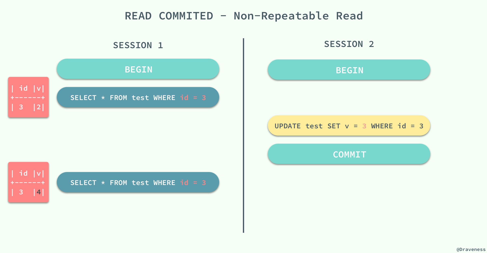

InnoDB 事务隔离
几种隔离级别
事务的隔离性是数据库处理数据的几大基础之一，而隔离级别其实就是提供给用户用于在性能和可靠性做出选择和权衡的配置项。
ISO 和 ANIS SQL 标准制定了四种事务隔离级别，而 InnoDB 遵循了 SQL:1992 标准中的四种隔离级别：READ UNCOMMITED、READ COMMITED、REPEATABLE READ 和 SERIALIZABLE；每个事务的隔离级别其实都比上一级多解决了一个问题：
-
RAED UNCOMMITED：使用查询语句不会加锁，可能会读到未提交的行（Dirty Read）；可以读取未提交记录。此隔离级别，不会使用，忽略。
-
READ COMMITED：只对记录加记录锁，而不会在记录之间加间隙锁，所以允许新的记录插入到被锁定记录的附近，所以再多次使用查询语句时，可能得到不同的结果（Non-Repeatable Read）；快照读忽略，本文不考虑。针对当前读，RC隔离级别保证对读取到的记录加锁 (记录锁)，存在幻读现象。
-
REPEATABLE READ：快照读忽略，本文不考虑。针对当前读，RR隔离级别保证对读取到的记录加锁 (记录锁)，同时保证对读取的范围加锁，新的满足查询条件的记录不能够插入 (间隙锁)，不存在幻读现象。 -
SERIALIZABLE：从MVCC并发控制退化为基于锁的并发控制。不区别快照读与当前读，所有的读操作均为当前读，读加读锁 (S锁)，写加写锁 (X锁)。Serializable隔离级别下，读写冲突，因此并发度急剧下降，在MySQL/InnoDB下不建议使用。
MySQL 中默认的事务隔离级别就是 REPEATABLE READ，但是它通过 Next-Key 锁也能够在某种程度上解决幻读的问题。

接下来，我们将数据库中创建如下的表并通过个例子来展示在不同的事务隔离级别之下，会发生什么样的问题：
CREATE TABLE test(
id INT NOT NULL,
UNIQUE(id)
);
脏读
在一个事务中，读取了其他事务未提交的数据。
当事务的隔离级别为 READ UNCOMMITED 时，我们在 SESSION 2 中插入的未提交数据在 SESSION 1 中是可以访问的。

不可重复读
在一个事务中，同一行记录被访问了两次却得到了不同的结果。
当事务的隔离级别为 READ COMMITED 时，虽然解决了脏读的问题，但是如果在 SESSION 1 先查询了一行数据，在这之后 SESSION 2 中修改了同一行数据并且提交了修改，在这时，如果 SESSION 1 中再次使用相同的查询语句，就会发现两次查询的结果不一样。

不可重复读的原因就是，在 READ COMMITED 的隔离级别下，存储引擎不会在查询记录时添加行锁，锁定 id = 3 这条记录。
幻读
在一个事务中，同一个范围内的记录被读取时，其他事务向这个范围添加了新的记录。
重新开启了两个会话 SESSION 1 和 SESSION 2，在 SESSION 1 中我们查询全表的信息，没有得到任何记录；在 SESSION 2 中向表中插入一条数据并提交；由于 REPEATABLE READ 的原因，再次查询全表的数据时，我们获得到的仍然是空集，但是在向表中插入同样的数据却出现了错误。

这种现象在数据库中就被称作幻读，虽然我们使用查询语句得到了一个空的集合，但是插入数据时却得到了错误，好像之前的查询是幻觉一样。
在标准的事务隔离级别中，幻读是由更高的隔离级别 SERIALIZABLE 解决的，但是它也可以通过 MySQL 提供的 Next-Key 锁解决：

REPEATABLE READ 和 READ UNCOMMITED 其实是矛盾的，如果保证了前者就看不到已经提交的事务，如果保证了后者，就会导致两次查询的结果不同，MySQL 为我们提供了一种折中的方式，能够在 REPEATABLE READ 模式下加锁访问已经提交的数据，其本身并不能解决幻读的问题，而是通过文章前面提到的 Next-Key 锁来解决。